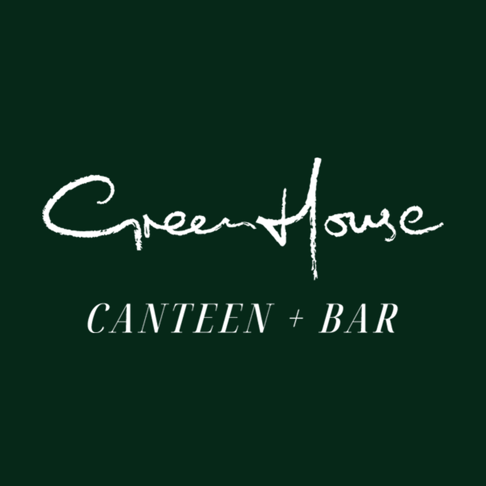
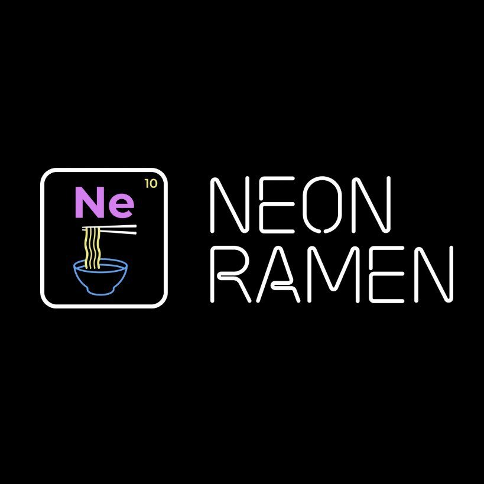

Izakaya Midori
Izakaya Midori is the Gold Coast's only 100% plant-based Japanese restaurant, tucked into a suburban corner shop in Reedy Creek. Its izakaya-style menu spans sushi, ramen, gyoza and rice dishes built around plant-based takes on classic Japanese flavours, served in a calm, minimalist dining room with undercover outdoor seating — plus a full bar, including its signature Midori Illusion cocktail.
6W
Where
Shop 7/50 Woodland Drive,
Reedy Creek, QLD 4227
Reedy Creek, QLD 4227
Why
Gold Coast's only 100% plant-based Japanese restaurant, built around izakaya-style small plates and a calm, minimalist dining room.
What to order
The Nigiri Omakase, Gyozaholic dumplings, Aka Ramen and a Midori Illusion cocktail.
When
Founded in 2019 by Fumiyoshi Iwasaki and Yuka Otani as the Gold Coast's first plant-based Japanese restaurant and first vegan izakaya. It has since won OpenTable's Diners' Choice Award and a 5-star rating on Eat Safe Gold Coast.
Words from the owner
"The owner of this venue will leave a personal message here soon — stay tuned!"
Public Opinion
Last update:
23/09/2026
Next update:
23/09/2027
⚡ Before you panic: a lower score does not mean a bad place to eat! Newer spots or those with fewer reviews get their score pulled towards 3.5 — our "we're not sure yet" zone, not a judgment. Think of it as the rating being cautious, not critical. As more people review, the score relaxes and reflects reality. And no venue is shown below 8.0/10, so if you see an 8.0, go for it — your taste buds won't regret it.
Bayesian Prior
A "safety-belt" average — it pulls each platform's rating towards 3.5/5 when there are few reviews, and releases the pull as the review count grows. This keeps new entries with only a handful of reviews from sitting at artificially perfect scores.
Wilson Lower Bound
A "confidence floor" for the rating — it factors in statistical uncertainty and returns a safe minimum score, calculated directly from the observed rating so the Prior is never counted twice. With few reviews it drops more; with many reviews it nearly matches the raw average.
Review Confidence
How much each platform counts. Confidence rises quickly at low review volumes and levels off at 99% from 5,000 reviews (7.7% at 100 reviews, 58.4% at 1,000, 86.2% at 2,000): more reviews mean more credibility, but with diminishing returns. Hover over the rating to see the confidence for this venue's total number of reviews.
Each platform's score is 30% Prior + 70% Wilson. The platforms are then averaged using their Review Confidence as weights, and converted to a 0–10 scale with a published minimum of 8.0/10. That 0–10 result is the score you see; a more precise version of it works behind the scenes to rank venues.
Suggestions
You might also like:

Plant-Based Restaurant & Bar
Greenhouse Canteen
📍 Gold Coast
A plant-focused restaurant and bar serving whole-food dishes — mushroom burgers, cauliflower wings, and arancini — alongside cocktails.
View venue

Vegan Ramen Bar
Neon Ramen
📍 Everton Park
Modern vegan ramen bar — rich miso, spicy tantanmen, and seasonal specials with house-made noodles and bold broths.
View venue
🌿
Back to the Eat & Drink page
and see other vegan and vegan-friendly places
See all places